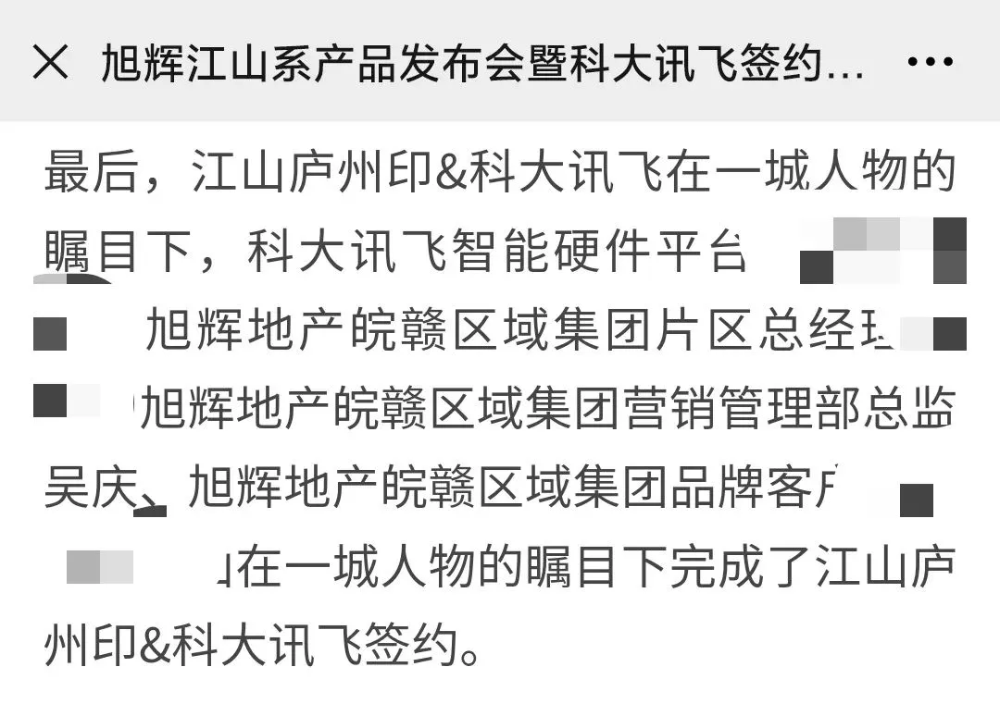
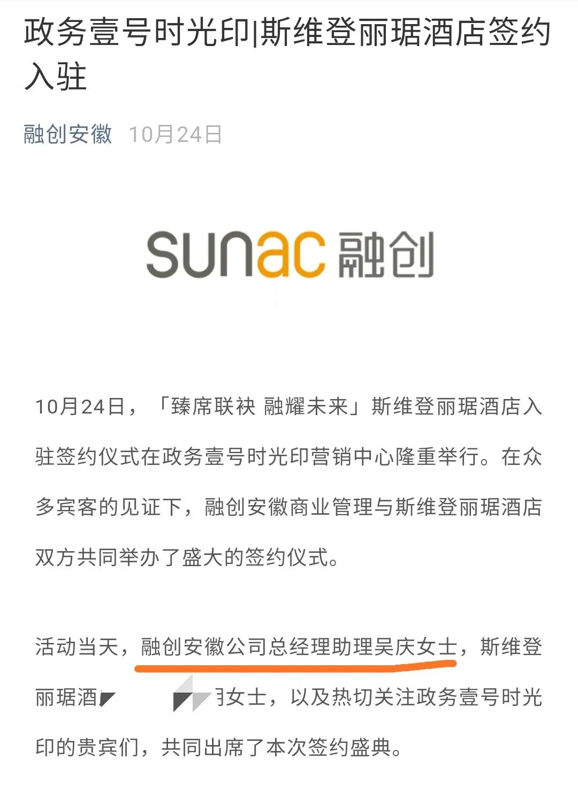

骚不过融创招了个被判刑的职业经理人做高管
骚不过融创：招了个被判刑的职业经理人做高管
一年前，老天机曾写过一个闻名地产江湖的“庆王爷”，也曾分析过，在贪腐案中，为何房企能获取证据的金额，一般只有真实金额的1-10%
一年后，天机隐退，市面上冒出了一堆冒充天机的各路李鬼。如今，天机被奇谈君拉来，负责建设小密圈（元旦后开放）。
周六周末，拉着天机去西溪湿地公园划船去，边喝茶边赏美景边谈事，被冻得直哆嗦，这就是中年男人的快乐吧。
欢迎大家来杭州玩，杭州是个好城市。
NO. 1｜壹
11月26日，旭辉的创始人林峰先生签发了一份文件。
旭集监字（2020）15号文件，关于皖赣区域集团原营销总监吴某等人因非国家工作人员受贿罪被判刑的通报。
文件中指出，皖赣区域集团原营销管理部总监吴某与其家属梁某、外部中介潘某、李某、姚某、张某等6人，因在旭辉某项目中收取客户“号头费”，被旭辉移送司法处理。
近期，6人被法院判决判决构成非国家工作人员受贿罪，其中，吴某、梁某、潘某被判处有期徒刑一年六个月，缓刑两年六个月；
文件称：旭辉严禁营销人员以权谋私、收取此类好处费，本案例说明这种向客户收取“号头费”、“茶水费”的行为构成刑事犯罪，望大家引以为戒。
纵观这一年多，天机写作期间，对反腐工作最积极互动的，当属旭辉、中南置地等，旭辉集团在反舞弊方面的积极态势，目前领先其他房企一档。
除了旭辉集团审计监察的积极作为，林峰先生也很支持反舞弊工作， 这也是旭辉的审计监察工作能强有力推进的重要原因。
恰好，林峰先生是天机的读者，在此，致上敬意，能如此有魄力推进反腐，不惧自曝家丑的房企创始人，凤毛麟角。
NO. 2｜贰
那么，旭辉皖赣区域集团原营销总监吴某是谁呢？
我们来看看旭辉集团2018年底的某次签约活动中的告示，旭辉地产皖赣区域集团营销管理部总监：吴庆。

故事到这里就完结了吗？吴庆女士因非国家工作人员受贿罪被判刑，她目前在哪里？
根据融创官方公众号“融创安徽”的报道，吴庆女士现在已经在融创安徽任总经理助理一职。

骚操作骚不过融创啊，这问题人员，是怎么通过背调入职的？
是人力负责人有问题，还是融创集团向来习惯对这类犯罪人员睁一只眼闭一只眼？
融创每个区域的版图和管理半径，都远大于其他十强房企，区域总裁的职权也远高于其他十强房企。
也就是说，同等职位下，融创的职位职权含金量，也大于其他十强房企。
这么一位问题人员，居然顺利入职并任职融创安徽公司总经理助理一职，让人诧异。
NO. 3｜叁
天机曾说，对于他的文章，融创是反应最激烈的，也是发律师函最多的，有时更是通过关系删文，背后搞小动作。
同时，融创也是反腐工作推进非常差劲的，上海区域无锡文旅城的几位主犯都已被宽恕；
融信多次审计未果的几位高度疑 似 存在问题的管理人员，也去了 融创上海区域无锡城市；
排行前四的某房企集团品牌部处理华北区域舆情的一位总监捞了千万，未被处理，跳槽去了重仓大亚湾的房企某光。
这类房企，莫不是审计监察成了摆设？
融创的创始人孙宏斌年轻时也犯过错，他也曾感谢柳传志，从严及时约束，避免“年轻的自己”在错误的道路上越走越远，二人冰释前嫌。
在反腐这个问题上，宽容，就是纵容。
奇谈君问天机对融创这家大开大合、擅长造势的房企怎么看？
半天没有回复。扭头一看， 一瓶53度飞天茅台下肚后， 这家伙早已烂醉如泥，趴在桌子上，嘴里隐约嘟嚷着：
垃圾回收站。
难道，天机想从奇谈君这辞职，跳槽去收拾“垃圾”？斟一杯茅台，悼消逝的地产天机，那份不惧艰难，立志推进房地产行业重视反腐的信念。
就这样吧，如果喜欢，文末帮忙点个 在看 ”，欢迎留言区一起侃大山。 文末左下角的 “ 阅读原文 ”，可找组织，防失联。

按日期浏览全部来源（同日按条目标识排序）